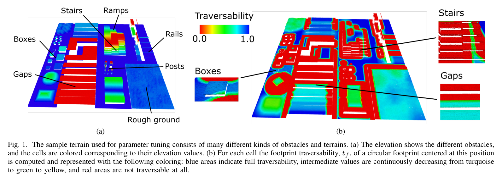
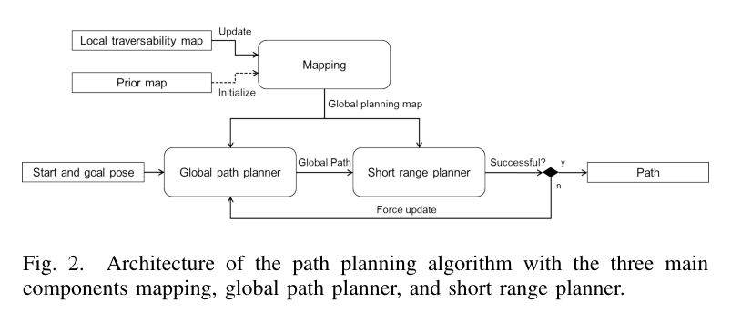
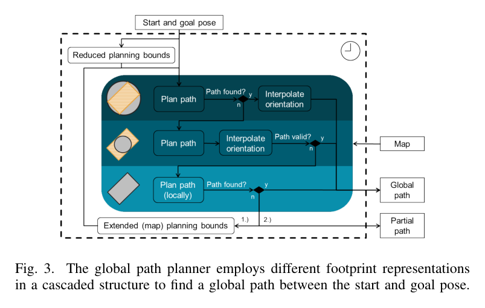
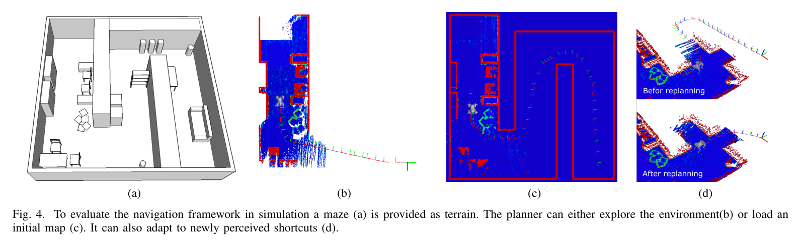
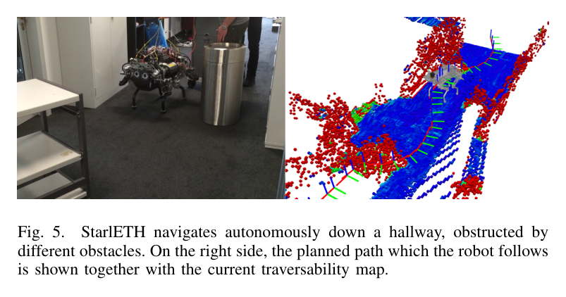

Navigation planning for legged robots in challenging terrain
한줄 요약 — 로봇 중심 고도지도에서 slope·roughness·step을 계산한 뒤 원·직사각형 footprint와 다족의 gap·step 극복 규칙을 계층적으로 적용하고, RRT*의 전역·단거리 재계획을 결합해 StarlETH가 미지 거친 지형과 좁은 통로에서 안전·경로 길이를 함께 최적화하도록 한 navigation framework다.
1.연구 배경 및 동기
다족의 능력을 지우지 않는 거친 지형 경로계획
다족 로봇은 바퀴·궤도보다 큰 step과 gap을 넘고 옆걸음이나 제자리 회전을 할 수 있지만, 단순 2D obstacle map은 이 능력을 모두 '충돌'로 지워 버린다. 반대로 terrain cell 하나의 slope나 roughness만 보고 통과를 허용하면 로봇 몸체 전체가 놓였을 때의 기울기, 지지 영역, 좁은 통로 방향을 놓친다. 이 논문은 주행성을 terrain 자체의 속성이 아니라 특정 robot footprint와 capability의 결합으로 정의한다.
외부 센서로 만든 robot-centric elevation map의 각 셀은 height h와 variance를 가진다. 여기서 local slope, roughness, step height를 추출해 0~1 traversability map을 만들고, 실제 pose의 footprint 안에 든 셀을 다시 평가한다. 작은 gap·step이나 국소적인 거친 모서리는 다족이 넘을 수 있지만, 큰 경사·넓은 거친 영역·높은 step은 금지하는 이중 수준 해석이 핵심이다.

원문 Figure 1 · PDF p.4 — Fig. 1. The sample terrain used for parameter tuning consists of many different kinds of obstacles and terrains. (a) The elevation shows the different obstacles, and the cells are colored corresponding to their elevation values. (b) For each cell the footprint traversability, tf, of a circular footprint centered at this position is computed and represented with the following coloring: blue areas indicate full traversability, intermediate values are continuously decreasing from turquoise to green to yellow, and red areas are not traversable at all.
선행 연구의 한계
D* Lite 기반 선행 방식은 robot을 point로 근사해 orientation과 실제 footprint를 고려하지 못했다.
BigDog의 2D costmap은 나무·바위가 놓인 대체로 평탄한 환경에 맞춰져 일반 rough terrain의 step·gap 능력을 활용하지 못했다.
정확한 polygon footprint만 항상 사용하면 넓은 환경에서 계획 시간이 늘고, 빠른 원형 근사만 쓰면 실제 통과 가능한 좁은 길을 막는다.
이 연구의 기여
slope·roughness·step의 가중 결합으로 셀 주행성을 만들고 robot capability별 critical threshold를 구성했다.
footprint 내부의 gap width, 전체 inclination, 국소 rough/steep extent를 검사해 다족 특유의 통과 가능 obstacle을 구별했다.
global·short-range replanning과 prior-map·exploration을 StarlETH simulation과 real hallway에서 검증했다.
2.방법론 및 시스템 구성
첫 단계는 elevation map과 같은 grid에서 slope s, roughness r, step height h를 주변 원형 영역으로 계산하고, 각 항을 critical value로 정규화해 traversability t를 만든다. 어느 한 특성이 임계값을 넘으면 t=0으로 강제한다. 두 번째 단계는 pose의 circular 또는 rectangular footprint가 덮는 셀의 평균 traversability와 기하 규칙을 검사해 footprint traversability t_f를 정한다.
planner는 OMPL RRT*의 collision checker를 footprint traversability 검사로 바꾸고, path length·낮은 traversability·옆걸음·후진 비용을 합산한다. global planner는 전체 경로를, short-range planner는 실행 구간을 갱신한다.
처리 파이프라인
1
확률 고도지도 입력
Kinect, stereo, laser 등 외부 센서로 robot-centric elevation map을 만들고 각 셀의 height h와 variance를 유지한다. 이동과 새 관측에 따라 local map을 계속 갱신한다.
2
셀 주행성 계산
조절 가능한 원형 neighborhood에서 slope s, roughness r, step height h를 계산해 임계값과 weight로 t를 만든다. 한 특성이라도 critical value를 넘으면 해당 셀은 t=0이다.
3
footprint capability 검사
직사각형 또는 원형 footprint 안의 평균 t를 구한 뒤, step과 gap을 분리하고 전체 inclination 및 위험 영역의 공간적 extent를 검사한다. 작은 gap·국소 모서리는 허용하고 넓은 steep/rough 영역은 거부한다.
4
cascaded RRT*
제한된 bounds에서 circumscribed circle로 먼저 계획하고, 실패하면 inscribed circle 경로를 polygon으로 검증한다. invalid segment만 polygon으로 재계획하고, 계속 실패하면 bounds를 전체 map으로 넓힌다.
5
short-range 실행 보정
현재 pose부터 일정 길이의 global path segment를 최신 지도에서 검증한다. 새 obstacle로 invalid면 local bounds에서 같은 cascade를 실행하고, 실패하면 global planner를 강제 갱신한다.
RRT*가 짧고 높은 주행성을 가진 segment를 선호하고, 별도 c_turn으로 옆걸음과 후진을 벌점화한다.

원문 Figure 2 · PDF p.5 — Fig. 2. Architecture of the path planning algorithm with the three main components mapping, global path planner, and short range planner.

원문 Figure 3 · PDF p.6 — Fig. 3. The global path planner employs different footprint representations in a cascaded structure to find a global path between the start and goal pose.
3.핵심 기술
terrain cell에서 robot pose로 올라가는 2단계 주행성
셀 단계의 t는 국소 경사·거칠기·단차를 간결하게 압축하지만, 최종 판단은 footprint 전체에서 한다. step의 상단 셀에서 step 방향에 수직인 길이 w_g 선을 따라 높이가 다시 임계 이내로 내려가는지 확인해 gap을 식별한다. footprint 전체의 평균 경사와 local bad-cell 비율도 검사해 한 점의 위험과 넓은 위험 지형을 구분한다.
t=1은 평탄·매끈·무단차, t=0은 locally untraversable
gap width w_g까지 legged robot의 overstep 허용
parameter sample terrain으로 conservative/risky 설정 조정
빠른 원형 근사와 정확한 polygon의 cascade
circumscribed circle은 orientation을 제거해 셀별 t_f를 cache할 수 있고 경로 validity를 보장하지만 좁은 passage를 과도하게 막는다. inscribed circle은 좁은 길을 빨리 찾지만 실제 body보다 작아 사후 polygon 검증이 필요하다. 마지막 polygon planning은 x-y-heading 3차원 상태에서 옆걸음·제자리 회전을 포함해 복잡한 해를 찾는다.
제한 bounds에서 시작해 실패 시 global bounds로 확대
inscribed path의 invalid 부분만 polygon 재계획
목표까지 실패하면 목표 주변에서 가장 가까운 valid partial path 사용
global과 short-range replanning의 역할 분리
global planner는 start-goal 전체 비용을 보고 prior와 누적 관측을 사용한다. short-range planner는 최신 map으로 실행 직전 segment의 validity를 보장한다. 전역 경로를 매 sensor update마다 다시 풀지 않고 local invalid segment만 교체함으로써 새 obstacle에 반응하면서도 RRT*의 큰 탐색 비용을 제한한다.
미관측 영역은 낮은 traversability로 exploration 가능
already perceived region을 선호
계획 중에는 global map 갱신을 잠시 중단해 path consistency 유지
4.실험 결과
실험 환경·장비·데이터
4족 보행로봇 StarlETH에 Hokuyo UTM-30LX laser range sensor를 탑재하고 universal grid map library로 elevation·traversability를 구현했다.
simulation은 10×10 m S자 maze에 box, chair, table을 놓고 start와 goal을 반대 모서리에 배치했다.
real test는 약 20 m hallway에 다양한 obstacle과 narrow passage를 배치하고, 벽만 포함한 building blueprint를 initial map으로 사용했다.
slope·roughness·step filter와 local traversability mapping은 약 0.5 Hz로 실행됐다.
실험 프로토콜
simulation에서 pure exploration, maze blueprint prior, prior에 없는 shortcut의 세 경우를 시험했다.
global path는 60 s마다, short-range path는 10 s마다 갱신하며 새 관측으로 obstacle·shortcut이 드러날 때 path adaptation을 확인했다.
real hallway에서도 같은 planner update rate를 유지하고 online 0.5 Hz traversability map으로 goal까지 자율 주행했다.
비교 기준
세 planning condition 간 정성 비교: pure exploration / prior blueprint / prior+new shortcut
동일 task에서 다른 planner의 수치 비교는 원문에서 보고되지 않음
평가 지표
goal 도달과 새 obstacle·shortcut 반영 여부
global·short-range update period
traversability mapping rate
maze·hallway 크기

원문 Figure 4 · PDF p.7 — Fig. 4. To evaluate the navigation framework in simulation a maze (a) is provided as terrain. The planner can either explore the environment(b) or load an initial map (c). It can also adapt to newly perceived shortcuts (d).

원문 Figure 5 · PDF p.6 — Fig. 5. StarlETH navigates autonomously down a hallway, obstructed by different obstacles. On the right side, the planned path which the robot follows is shown together with the current traversability map.
핵심 결과 해석
10×10 m simulation maze에서 세 조건 모두 solution을 찾아 실행 중 새 지형에 맞춰 경로를 바꿨다. pure exploration은 시야 밖을 goal까지 직선으로 가정하다 새 관측마다 수정했고, blueprint prior는 알려진 maze를 따르면서 표시되지 않은 obstacle을 우회했다. shortcut 조건에서는 처음 prior 경로를 따르다가 지름길이 지도에 들어오고 global path가 갱신되자 goal로 직접 향했다.
실제 약 20 m hallway에서는 벽만 든 prior map으로 시작해 laser가 새 obstacle과 좁은 passage를 관측했다. 0.5 Hz traversability mapping과 simulation과 같은 60 s global·10 s short-range 갱신으로 path가 obstacle을 피하도록 바뀌었고 StarlETH가 goal position까지 자율 주행했다. 이는 원형 근사의 속도와 polygon 검증의 좁은 통로 능력이 실제 platform에서 함께 동작했음을 보여준다.
정량 결과
평가 항목
정량 결과
조건·맥락
원문 근거
simulation maze 크기
10×10 m
S자 maze, start-goal 반대 모서리, box·chair·table obstacle
circumscribed circle만 사용하면 실제로 통과 가능한 narrow passage가 막힌 것으로 판단된다.
inscribed circle 경로는 실제 polygon footprint와 충돌할 수 있어 사후 검증·부분 재계획이 필요하다.
전체 cascade와 확장 bounds에서도 goal path를 못 찾으면 goal을 포함하지 않는 partial path로 대체된다.
5.한계 및 향후 연구
현재 한계
planner 간 planning time·path length·success rate·clearance의 정량 benchmark가 없어 cascade의 효율 이득을 수치로 비교할 수 없다.
0.5 Hz terrain mapping, 10 s short-range, 60 s global update는 느린 StarlETH 환경에 맞춰져 빠른 장비나 동적 장애물에는 늦다.
실제 검증은 약 20 m 실내 hallway 한 종류이며, path는 body pose 수준이라 footstep과 gait를 최적화하지 않는다.
향후 연구
각 path segment의 terrain에 따라 빠른 trot과 느리지만 정교한 gait를 planner가 함께 선택한다.
계획한 body path를 따라 local footstep planner가 적절한 접촉점을 찾아 다족의 full capability를 활용한다.
실제 통과 성공·에너지·slip 데이터로 robot-specific traversability를 학습한다.
6.한마디로 정리
핵심 방법은?
고도지도에서 slope·roughness·step을 계산하고 다족 capability와 실제 footprint를 검사한 뒤, 원형·polygon cascade RRT*와 전역·국소 재계획을 결합한다.
핵심 결과는?
StarlETH가 10 m maze 세 조건과 약 20 m hallway에서 미지 obstacle·shortcut에 경로를 적응하며 goal에 도달했다.
한계는?
정량 planner 비교가 없고 0.5 Hz 지도·10/60초 계획 주기가 느리며, footstep·gait·slip dynamics는 body-level 기하 비용에 포함되지 않았다.
#작업·궤적계획#환경인식#주행성 지도#계층형 RRT*#발자국 모델
나의 의견 / 우리 연구와의 연관성
굴착기도 track footprint, 상부체 자세, 붐 방향과 적재 상태에 따라 통과 가능성이 달라진다. terrain-cell 다음 footprint-pose를 평가하는 구조는 rollover·ground-clearance·counterweight collision을 넣기 좋은 틀이다.
대형 장비에는 gap 대신 접지압, track slip과 차체 자세가 중요하다. 원형-다각형 cascade는 유지하되 footprint validity를 stability·sinkage risk로 교체해야 한다.
track polygon 아래 셀의 slope·roughness뿐 아니라 soil bearing capacity와 sinkage uncertainty를 함께 검사할 수 있다.
굴착기의 heading state는 narrow access와 counterweight sweep, boom 작업 방향을 결정하므로 pose planning에 필수다.
prior blueprint와 online terrain update로 계획도와 실제 토공 형상의 차이를 주행 중 보정할 수 있다.
7.전체 그림·표
본문 핵심 위치에 배치하지 않은 원문 Figure와 Table을 원문 페이지 순서로 수록한다.